Foundations, components and 15 templates for client decks, reports, case studies and proposals. Light by default, dark for high-impact moments.
Everything a slide uses comes from here. Slides never use a loose hex value — only semantic tokens.
Five rules that settle the cases this documentation doesn't cover.
Blue outline = colors verified in the Simula color guide. The rest are derived to give the system range.
simula.blue.500 · #3746CCCalls to action, emphasis, primary data.simula.blue.510 · #3A4BCFIcons and markers only. Do not merge with Primary Blue.simula.night · #00010DPrimary ink and dark background.neutral.50 · #FAFBFFSecondary light background.neutral.0 · #FFFFFFDefault background; text on blues.simula.blue.300 · #7D8BF0Accent text on dark.simula.blue.700 · #1E2A8BGradient stop (from the logo).simula.cyan.400 · #4DCBE5Gradients only. 1.91:1 on white: never text.simula.lavender.300 · #9DA8F2Gradients and 3rd data series.simula.navy.900 · #0A0F2CDark surface.#4E5870Secondary text.#6A7489Lightest gray allowed for text.#CDD3E0Borders and context bars.#E4E8F1Subtle hairlines and chart grid.A slide asks for a role, not a color. Adding .dark to a <section> swaps the whole mapping.
| Token | Light | Dark | Use |
|---|---|---|---|
--bg-primary | #FFFFFF | #00010D | Slide background |
--bg-secondary | #FAFBFF | #0A0F2C | Alternate background, panels |
--surface-secondary | #F2F4FA | #121A45 | Tracks, placeholders |
--text-primary | #00010D · 20.8:1 | #FFFFFF · 20.8:1 | Titles, numbers |
--text-secondary | #4E5870 · 7.1:1 | #A6AECB · 9.4:1 | Body, supporting copy |
--text-tertiary | #6A7489 · 4.7:1 | #8D96B3 · 7.1:1 | Labels, axes, sources |
--accent-primary | #3746CC | #3746CC | Fills (white text) |
--accent-text | #3746CC · 7.2:1 | #7D8BF0 · 6.8:1 | Highlighted word or number |
--border-subtle | #E4E8F1 | white 10% | Hairlines between rows |
--border-default | #CDD3E0 | white 18% | Outlines, dividers |
--data-primary | #3746CC | #5E6EE6 | Primary series / highlight |
--data-secondary | #1A9BB8 | #1993AF | 2nd series (cyan) |
--data-tertiary | #9DA8F2 | #9282E6 | 3rd series |
--data-neutral | #CDD3E0 | white 22% | Context, comparison |
--data-positive / negative | Change — always with arrow + sign |
Data palettes validated (color-blind separation, lightness band and contrast) against White and against Night. The 3rd series on light falls below 3:1: always pair it with a direct label.
Three atmospheres, reproducible in code. Never set text over the area of greatest variation.
Light editorial background. At most 1 in every 4 light slides.
radial 1100×700 @ 92% −12% · #3746CC 10% → 0 (62%)
radial 800×520 @ 108% 62% · #4DCBE5 7% → 0
base #FAFBFFKPI panels and achievements. White text only.
linear 135° · #1E2A8B 0 → #3746CC 42% → #4F60DA 72% → #7D8BF0 100%
+ radial lavender 55% @ 100% 0Covers, dividers, closings. Move the focal light with --glow-x/y on every slide.
radial 60%×70% @ glow · #3746CC 95% → 38% (34%) → 0 (68%)
radial cyan 30% offset −9% / −8%
base #00010DDerived from the logo's translucent facets: vertical bands of the brand blues, blurred 18px, with a 1px hairline texture every 14px (measurement precision). Always a contained object.
Divider column, side strip.
Dark covers; apply a side mask to blend into Night.
Outcome panel, creative panel.
Mockup background on light slides.
Geist 400/500/600 + Geist Mono 500 for labels, axes and sources. Sizes are for the 1920 canvas (shown at 50%).
108 / 1.00 · 500 · −4%88 / 1.02 · 500 · −3.5%72 / 1.05 · 500 · −3%56 / 1.08 · 500 · −2.5%40 / 1.15 · 500 · −2%30 / 1.22 · 600 · −1.2%28 / 1.40 · 40024 / 1.45 · 400Mono 24 · 500 · +3% · CAPS24 / 1.40 · 400 · the floor120 / 0.95 · 500 · −4.5% · tabular300 / 0.86 · 500 · −5.5% · tabular12 columns of 122px, 24px gutter, 96px horizontal and 80px vertical margins. Header and footer live inside the safe area.
Only three, and only for real elevation: shadow-1 (tooltip, floating chip), shadow-2 (panel over an image), shadow-device (phone mockups). Content cards have no shadow.
1.75px stroke on a 24px grid, rounded joins, no fills. Use sparingly: the system speaks through type and numbers, not icons. Never emoji.
Classes live in simula-ds.css; charts in simula-charts.js. Previews at 50% of real scale. Switch the theme at the top to see the dark variant.
.curtain--mist or --electric.| Channel | Installs | CPI | D30 ROAS |
|---|---|---|---|
| Rewarded playable | 84,200 | $1.04 | 71% |
| Video interstitial | 31,900 | $1.42 | 52% |
| Sponsored character | 12,330 | $1.66 | 44% |
| Total | 128,430 | $1.20 | 62% |
.logo-neg is a derived reversed version (only the wordmark turns white): replace it with the official file once available.Write the chart as data (data-chart='{…}') and the script draws the SVG with the slide's tokens. Bars always start at zero, labels are direct, only the main point is blue.
area, kind: bench|secondary, ann (max 2), ticks, fmt.yMax across side-by-side charts.
Each template serves a different communication goal. Click to open it in the deck (← → to navigate, R to restart, Print → PDF to export).
For designers and for AI agents building decks with this system.
.phone, undistorted.poster.simula-ds.css, then the deck HTML, then simula-charts.js, and deck-stage.js last.<section class="slide"> with .s-head, .s-body and .s-foot. Dark: add dark + bg-midnight or a .curtain.Simula Templates.html; don't invent new layouts unless needed.var(--text-primary)…) and type classes (.t-h-xl…). Loose hex values only for partner colors..ph or [XX]. Example data → .flag “Illustrative data”.data-chart, with a shared yMax across neighboring charts.